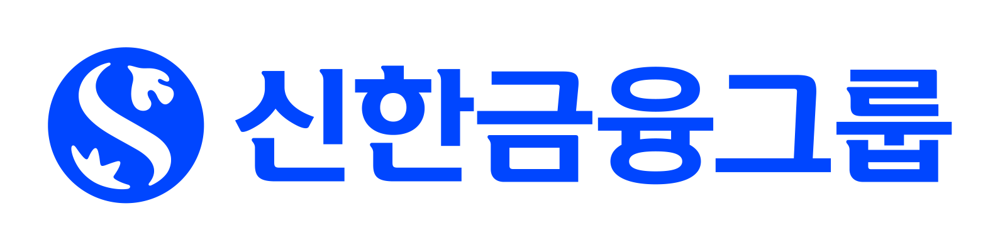

김해람 법무사
상속등기, 법원 제출 서류 등
법무사 업무 범위에서 진행합니다.
인천 상속 · 등기 · 한정승인
남겨진 재산과 채무, 가족마다 다른 사정.
무엇부터 해야 할지 함께 정리하겠습니다.
절차를 미리 고르지 않으셔도 괜찮습니다.

내 상황에 맞는 상속 안내
지금 가장 마음에 걸리는 일을 골라주세요.
확인할 것과 준비할 것을 먼저 안내합니다.
빚이 있다는 이유만으로 절차를 정하지 않습니다. 남겨진 재산·채무와 상속인의 범위를 함께 살펴야 합니다.
있다면 준비해주세요 채무 안내문, 재산·채무 조회 자료
자료가 없어도 아는 내용부터 말씀하시면 됩니다.
부동산 명의 이전은 가족관계와 분할 방식에서 시작합니다. 가족의 합의 내용과 필요한 등기 절차를 함께 살핍니다.
있다면 준비해주세요 부동산 주소, 등기사항증명서, 합의 내용
가족별로 어떤 자료가 필요한지 따로 안내합니다.
재산 금액 하나만으로 세금을 단정할 수 없습니다. 재산의 종류, 채무, 사전 증여 등 확인할 정보를 먼저 모읍니다.
있다면 준비해주세요 대략적인 재산 목록, 증여·채무 관련 자료
세액 산정·세무 신고는 세무사의 검토 범위입니다.
연락이 어려운 가족이 있거나 나누는 방법에 이견이 있다면, 협의 가능한 부분과 법률 검토가 필요한 부분을 먼저 나눕니다.
있다면 준비해주세요 가족관계, 쟁점 메모, 유언·기존 합의서
분쟁 상담·소송 대리는 변호사의 업무 범위입니다.
무슨 절차가 필요한지 고르지 않으셔도 됩니다. 아는 내용을 바탕으로 먼저 확인할 일과 상담의 순서를 정리합니다.
서류를 다 모으지 않아도 괜찮아요
받은 안내문이 있다면 이름과 날짜부터 확인해주세요.
위 내용은 상담 준비를 위한 일반 안내입니다. 구체적인 절차와 기한은 개별 사정에 따라 확인합니다.
김해람 법무사
어떤 서류가 필요한지, 왜 이 절차를 거치는지.
다음 할 일을 알고 진행하실 수 있도록 설명합니다.

금융 현장의 경험신한은행 17기 공채 행원
업무에 따라 이어지는 협업
김해람 법무사와 필요한 절차를 먼저 정리하고,
세무·분쟁 검토가 필요하면 협업 범위를 안내합니다.
상속등기, 법원 제출 서류 등
법무사 업무 범위에서 진행합니다.
가족 간 쟁점이나 소송 검토가
필요한 경우 협업합니다.
상속재산과 세무 신고 검토가
필요한 경우 협업합니다.
전문가별 검토·위임 여부와 비용은 업무 필요성에 따라 별도로 확인합니다.
진행과 비용
무엇을 맡기는지, 어디까지 진행하는지.
업무 범위와 비용을 확인한 뒤 결정하세요.
가족관계, 재산·채무,
기한과 걱정되는 일
맡길 업무와 필요한 협업,
보수와 별도 실비
위임 범위에 따른
서류 작성·신청·등기
처리 결과와 보완 사항,
후속 절차 확인
견적에서 확인할 세 가지
상속인 수, 재산의 종류와 업무 범위에 따라
비용이 달라집니다.
위임하는 업무의 범위와 보수, 부가가치세 포함 여부를 확인합니다.
취득세, 등록면허세, 법원 납부 비용, 증명서 발급 등 사건에 필요한 항목을 구분해 확인합니다.
채권자 관련 후속 절차, 추가 등기, 변호사·세무사 위임 등 별도 업무의 필요성과 견적을 확인합니다.
구체적인 일정과 수임 가능 여부는 자료 확인 후 안내합니다. 상담 예약만으로 사건 위임이 성립하지 않습니다.
상담 전, 가볍게 정리하기
절차 이름도, 정확한 금액도 몰라도 괜찮습니다.
지금의 상황과 궁금한 점만 골라보세요.
 선택한 내용을 메모로 정리해 상담할 때 사용할 수 있어요.
선택한 내용을 메모로 정리해 상담할 때 사용할 수 있어요.자주 묻는 질문

재산과 채무의 구성, 상속인의 범위, 기한과 이미 한 행위 등을 함께 살펴야 합니다. 상속포기와 한정승인은 효과와 후속 절차가 다르므로, 빚이 있다는 사실만으로 하나를 단정하지 않습니다.
원칙적으로 상속개시가 있음을 안 날부터 3개월 내에 해야 합니다. 단순히 사망일부터 계산할 수 없는 경우나 예외가 있으므로, 사망을 안 시점과 본인이 상속인이 된 사실을 안 시점을 함께 확인해야 합니다. 기한이 걱정되면 바로 문의해주세요.
생활법령정보 · 상속의 승인·포기 ↗가족관계, 알고 있는 재산·채무, 걱정되는 일부터 말씀해주세요. 이미 받은 안내문이나 법원 서류가 있다면 문서명과 날짜를 확인해주세요. 필요한 발급 서류는 상황을 들은 뒤 안내합니다.
상속인의 범위, 연락과 서명 가능 여부, 합의된 내용부터 확인합니다. 의견이 정리된 경우와 분쟁이 있는 경우는 진행 방법이 달라질 수 있습니다. 분쟁에 대한 법률 검토나 소송이 필요하면 변호사 업무와 위임 범위를 별도로 안내합니다.
법무사는 상속등기 등 법무사 업무를 담당합니다. 상속세 산정·신고는 세무사의 업무이므로, 세무 검토가 필요한지 확인하고 협업 범위와 별도 비용을 안내합니다. 모든 상속 사건에서 세무 위임이 필요한 것은 아닙니다.
상담 예약과 사건 위임은 별개입니다. 수임 가능한 업무와 보수, 실비 및 추가 업무 범위를 확인하고 결정하실 수 있습니다. 방문 상담을 예약할 때는 상담 방식과 상담료 유무도 함께 확인해주세요.
인천 서구 해람법무사
편한 방법으로 이야기를 시작해주세요.
어떤 상담이 필요한지부터 함께 살피겠습니다.